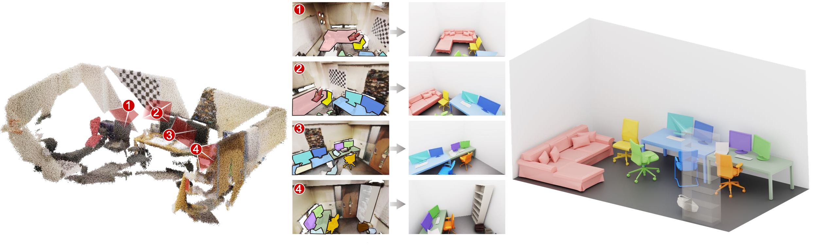
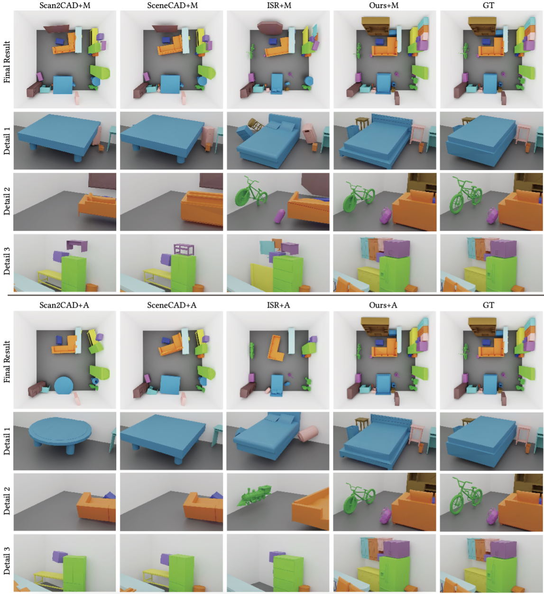
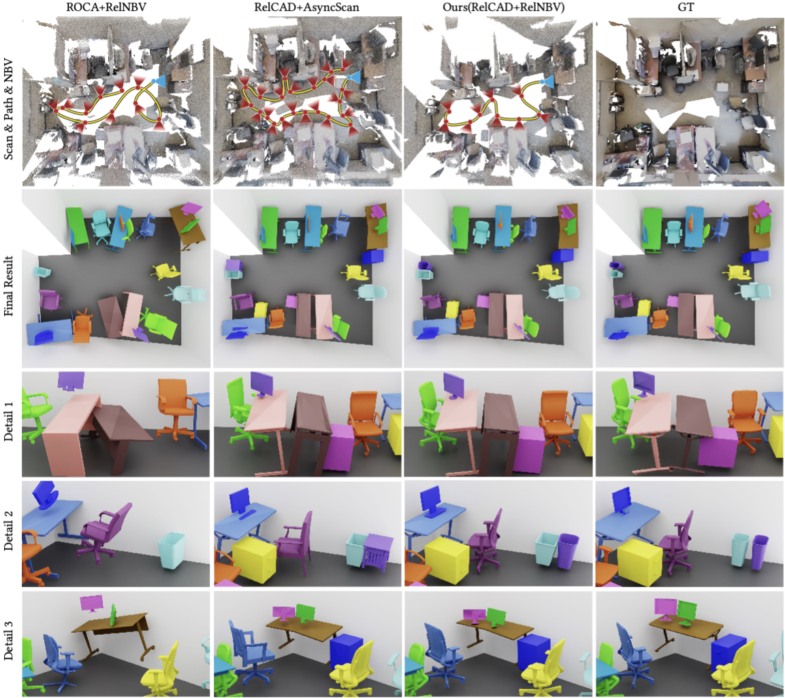
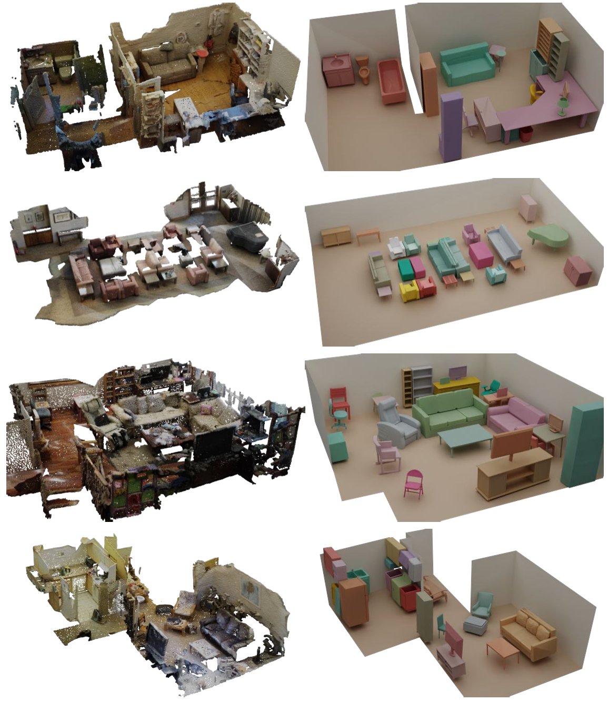

Online Scene CAD Recomposition via Autonomous Scanning
Figure 1: With the rough reconstruction (left) based on spare viewpoints selected via autonomous scanning (middle), our scene CAD recomposition result (right) can faithfully reflect the object geometry and arrangement in the given scene. Note that the corresponding CAD models are retrieved and their relative poses are optimized online with the few automatically optimized scanning viewpoint, even though the scene is only partially reconstructed.
Abstract
Autonomous surface reconstruction of 3D scenes has been intensely studied in recent years, however, it is still difficult to accurately reconstruct all the surface details of complex scenes with complicated object relations and severe occlusions, which makes the reconstruction results not suitable for direct use in applications such as gaming and virtual reality. Therefore, instead of reconstructing the detailed surfaces, we aim to recompose the scene with CAD models retrieved from a given dataset to faithfully reflect the object geometry and arrangement in the given scene. Moreover, unlike most of the previous works on scene CAD recomposition requiring an offline reconstructed scene or capture video as input, which leads to significant data redundancy, we proposed a novel online scene CAD recomposition method with autonomous scanning, which efficiently recomposes the scene with the guidance of automatically optimized Next-Best-View (NBV) in a single online scanning pass. Based on the key observation that spatial relation in the scene can not only constrain the object pose and layout optimization but also guide the NBV generation, our system consists of two key modules: relation-guided CAD recomposition module that uses relation-constrained global optimization to get accurate object pose and layout estimation, and relation-aware NBV generation module that makes the exploration during the autonomous scanning tailored for our composition task. Extensive experiments have been conducted to show the superiority of our method over previous methods in scanning efficiency and retrieval accuracy as well as the importance of each key component of our method.
Download
paper(~34M)
supplementary material(~21M)
code
Slide PDF(~6M)
Demo
Fast Forward
Talk
All the materials have been uploaded.
Results
Figure 2: Qualitative comparison with offline CAD recomposition baselines, including Scan2CAD, SceneCAD and Interactive Scene Reconstruction, with either manual scans(+M) provided in the ScanNet dataset or autonomous scans(+A) generated by our method as input.
Figure 3: Qualitative comparison with online CAD recomposition baselines ROCA+RelNBV and RelCAD+AsyncScan. In the first row, we show the fusion of all captured RGBD scans with the sequence of NBVs generated by each method, where the initial view is colored in blue.
Figure 4: Example results generated by our online scene CAD recomposition method, with the corresponding virtual scene shown on the left.
Acknowledgments
We thank the anonymous reviewers for their valuable comments. This work is supported by the National Key R\&D Program of China (2022YFB3303400), National Natural Science Foundation of China (62025207, 62322207), Shenzhen Science and Technology Program (RCYX20210609103121030), and GD Natural Science Foundation (2021B1515020085).
Bibtex
@ article{ Li-2023-AutoScan2CAD, title = {Online Scene CAD Recomposition via Autonomous Scanning}, author = {Changhao Li, Junfu Guo, Ruizhen Hu, Ligang Liu}, journal = {ACM Transactions on Graphics (SIGGRAPH Asia 2023)}, volume = {42}, number = {6}, pages = {Article 250: 1-16}, year = {2023}}